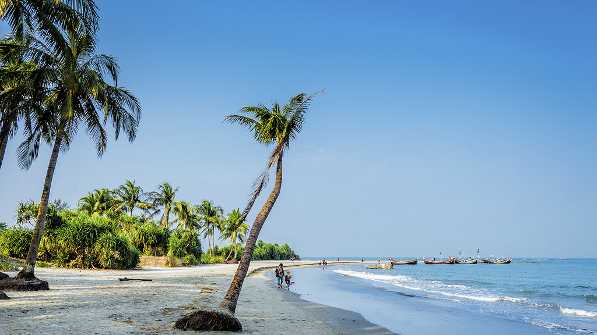
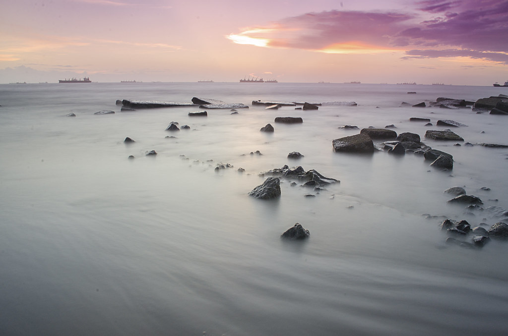

Cox's Bazar
Cox's Bazar is famous for its long natural sandy sea beach.Cox's Bazar has the world's largest unbroken sea beach which stretches more than 120 km. The entire beach is a stretch of golden sandy sea beach which is reachable by motorbike.

Cox's Bazar is famous for its long natural sandy sea beach.Cox's Bazar has the world's largest unbroken sea beach which stretches more than 120 km. The entire beach is a stretch of golden sandy sea beach which is reachable by motorbike.
St. Martin is generally known as “Narikel Zinzira” in Bengali, means 'Coconut Island' and this is the only coral reef island in Bangladesh. It is a small island in the north eastern part of the Bay of Bengal, created the southernmost part of our country.
Patenga is a sea beach of the Bay of Bengal, located 14 kilometres south from the port city of Chattogram, Bangladesh. It is near to the mouth of the Karnaphuli River. The beach is very close to the Bangladesh Naval Academy of the Bangladesh Navy and Shah Amanat International Airport.
